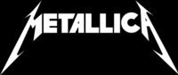
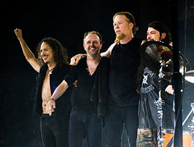

Metallica— американський метал-гурт з Лос-Анджелеса, Каліфорнія, який грає в жанрах треш-метал та геві-метал. Разом з Slayer, Megadeth та Anthrax входять до «великої четвірки треш-металу»[1]. Заснований в 1981 році, коли Джеймс Гетфілд відгукнувся на оголошення барабанщика Ларса Ульріха, розміщене у місцевій газеті. Зараз до складу гурту, окрім Гетфілда та Ульріха, входять гітарист Кірк Геммет (який приєднався у 1983) та бас-гітарист Роберт Трухільйо (з 2003 року). Також в різні періоди учасниками гурту були: гітарист Дейв Мастейн (який згодом заснував Megadeth), басисти Рон Макговні, Кліфф Бертон та Джейсон Ньюстед. Гурт також тривалий час співпрацював з Бобом Роком, який спродюсував усі їхні альбоми з 1990 до 2003 року, та виконував обов'язки бас-гітариста в період між відходом Ньюстеда та приходом Трухільйо.
Гурт отримав прихильників у середовищі андеґраундної музики та схвальні відгуки критиків, випустивши третій студійний альбом Master of Puppets (1986), який зараз вважається «класикою треш-металу» та суттєво вплинув на подальший розвиток цього жанру. Комерційний успіх прийшов після випуску п'ятого альбому (також відомого під назвою The Black Album), який дебютував на першій сходинці чарту Billboard 200. Після випуску цього альбому, подальша творчість гурту відійшла від екстремального стилю і стала більш мейнстримовою.
В 2000 році Metallica був у числі музичних виконавців, які подали позов проти Napster, у зв'язку з безкоштовним поширенням матеріалів, захищених авторським правом, без дозволу авторів. У результаті, було досягнуто домовленості, за якою Napster став платним сервісом. Незважаючи на перше місце в Billboard 200, альбом St. Anger (2003), за винятком гітарних соло та «сталевого звучання» малих барабанів, розчарував багатьох фанатів гурту. У фільмі Some Kind of Monster показано процес створення St. Anger та відносини між учасниками гурту протягом цього часу. В 2009 році Metallica було введено в Залу слави рок-н-ролу.
Гурт отримав дев'ять нагород Греммі, а п'ять їхніх альбомів дебютували на першому рядку чарта Billboard 200[2], що зробило Metallica першим гуртом, якому це вдалося; цього результату пізніше досягнув, а згодом й перевершив Dave Matthews Band[3]. Альбом Metallica (1991) було продано у кількості понад 15 мільйонів копій у США та 28 мільйонів копій по всьому світу, що зробило його одним з 25-ти найкраще продаваних альбомів у країні[4]. В грудні 2009 року, він став найпродаванішим альбомом ери SoundScan, обігнавши Come On Over кантрі-виконавиці Шанайї Твейн[5]. З випуском останнього альбому Death Magnetic (2008), гурт продав понад 100 мільйонів альбомів у всьому світі. Станом на грудень 2009, Metallica — четвертий найпродаваніший музичний виконавець з початку ери SoundScan, продавши з 25 травня 1991 року більше 52 672 000 альбомів лише в Сполучених Штатах[6].
Metallica
 - Жанр
- Треш-метал
- Спід-метал
- Геві-метал
- Гард-рок
Гурт Metallica був заснований в Лос-Анджелесі 28 жовтня[11] 1981 року гітаристом та вокалістом Джеймсом Гетфілдом та барабанщиком Ларсом Ульріхом після того, як обидва помістили оголошення про створення гурту у виданні «The Recycler». Однак, як пізніше з'ясувалося з інтерв'ю Рона Макговні журналу «So What!», Джеймса та Ларса познайомив між собою їх спільний друг Гью Таннер, який в той час був соло-гітаристом у гурті Рона і Джеймса Leather Charm. Дует запросив басиста Рона Макговні, знайомого Гетфілда за його попереднього гурту Leather Charm[12], проте на ранніх стадіях існування гурту постійно виникали проблеми з гітаристами, тому вже спочатку їх змінилося кілька: Ллойд Грант, Бред Паркер і Джеф Ворнер[13]. Metallica отримала свою назву, коли Рон Куінтана попросив Ларса Ульріха допомогти йому вибрати назву для свого нового журналу про американських та британських хеві-метал гуртів. Куінтана мав такі варіанти як «Metallica», «Metal Mania» і «Hesse»[13]. Ульріх збагнув, що «Metallica» буде відмінною назвою для гурту та сказав Рону, що така назву навряд чи кому-небудь сподобається.
На початку 1982 року Ульріх переконав засновника та власника Metal Blade Records Брайана Слейджела включити пісню «Hit The Lights» у першу компіляцію Metal Massacre[14]. Зневірившись у пошуках постійного лідер-гітариста, Ульріх помістив оголошення в журналі The Recycler[15]. Дейв Мастейн з Ганінгтон Біч, який у той час вже грав у гурті Panic, відповів та зустрівся з учасниками Metallica для прослуховування[15]. Ульріх та Хетфілд були так вражені обладнанням та однією лише розминкою Мастейна, що вони попросили його приєднатися до гурту ще до початку самого прослуховування. В березні та квітні 1982 року було записано кілька демо, включаючи Hit The Lights, для збірки Metal Massacre і так зване демо Power Metal («Hit The Lights», «The Mechanix», «Jump In The Fire», «Motorbreath»)[16]. Як згодом пояснив Рон, слова Power Metal в назві демо з'явилися за його ініціативою[17]. Йому видалось цікавим додати ці слова на супровідну візитку до демо-касети, що розсилається на фірми грамзапису, оскільки вказівка всього лише назви гурту та телефону здалося йому вкрай неоригінальним [17]. Кілька місяців потому гурт записав повноформатне демо No Life 'til Leather, яке швидко привернуло увагу незалежних розповсюджувачів, traders, які і допомогли отримати її всім, хто цікавиться, фанам[18].
В травні 1983 року гурт Metallica поїхав у Рочестер, Нью-Йорк, щоб записати свій дебютний альбом, Metal Up Your Ass, з продюсером Полом Керкіо[22]. 11 квітня 1983 учасники гурту вирішили звільнити Мастейна з гурту через зловживання наркотиками і алкоголем та агресивну поведінку[23]. Того ж дня гітарист Exodus Кірк Геммет замінив Мастейна[24]. Мастейн, який після цього створив гурт Megadeth, висловлював свою неприязнь до Геммета під час інтерв'ю. Він сказав, що Геммет «вкрав мою роботу»[25]. Мастейн був розлючений, бо вважав, що Геммет став популярним завдяки гітарним партіям, які написав Дейв [26]. В 1985 році в інтерв'ю з Metal Forces[en], Мастейн дорікнув Геммету, сказавши: «Це справді кумедно, як Кірк Геммет зірвав усі лід-брейки, які я зіграв в тому записі No Life 'til Leather і став гітаристом № 1 у вашому журналі»[27]. В дебютний альбом Megadeth Killing Is My Business... and Business Is Good! (1985), Мастейн включив пісню «Mechanix», яку Metallica переробила, назвала «The Four Horsemen» і додала до альбому Kill 'Em All. Мастейн сказав, що зробив це для того, щоб «підтягнути Metallica», оскільки гурт ставився до Дейва Мастейна, як до алкоголіка і вважав, що той не може грати на гітарі[27]. Перший концерт Metallica з Гемметом відбувся 16 квітня 1983 року в нічному клубі The Showplace у Дуврі, Нью-Джерсі[24]
Дебютний альбом гурту планували назвати Metal Up Your Ass[22]. Оскільки лейбл і дистриб'ютори відмовилися випускати альбом з такою назвою, її було змінено на Kill 'Em All[28]. Платівка була випущена на лейблі Megaforce Records у США та Music for Nations в Європі. В 1988 році альбом піднявся на 120-ту позицію в чарті Billboard 200. Хоча альбом й не отримав очікуваного фінансового успіху, він забезпечив Metallica перших фанів на андеґраундній метал-сцені. Згодом гурт разом з Raven розпочав Kill 'Em All for One тур в підтримку альбому[22]. В 1989 році журнал Rolling Stone помістив його на 35 місце в списку «100 найкращих альбомів 1980-х»[29]. У лютому 1984 року Metallica підтримала Venom під час туру Seven Dates of Hell і виступила на фестивалі Aardschok у Зволле, Нідерланди[30].
Свій другий студійний альбом Ride the Lightning гурт записував на Sweet Silence Studios в Копенгагені, Данія[31]. Випущений в липні 1984 року, альбом досягнув 100-ї позиції у Billboard 200[32]. Французькі видавці помилково надрукували зелені обкладинки для альбому, які зараз є частиною приватних колекцій. До альбому, зокрема, входили пісні «For Whom the Bell Tolls», «Fade to Black», «Creeping Death» та інструментальна композиція «The Call of Ktulu». Мастейн отримав винагороду за «Ride the Lightning» та «The Call of Ktulu».